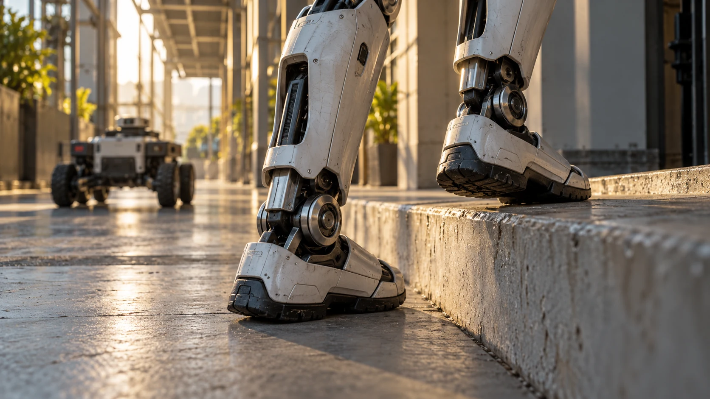

Choose mobility around the route and the work, rather than treating a human-like silhouette as the requirement.
The word humanoid covers more than walking robots. A platform can have a human-like upper body on wheels, a stationary base, or a bipedal lower body. Those choices change the integration problem. The right starting point is the environment in which useful work must happen.
Map the route before the robot
Document floor transitions, narrow passages, ramps, doors, stairs, and working heights. Include areas where the platform will turn, wait, charge, or receive assistance. A route that looks straightforward to a person can contain important constraints for a machine. Measure it instead of relying on a floor-plan impression.
Consider whether mobility is needed
If every useful task occurs at one workstation, a stationary upper-body platform may deserve a place on the shortlist. If the robot must travel between stations, investigate the route as part of the application. Adding mobility creates questions about navigation, traffic, recovery, and infrastructure.
Compare demonstrated operating conditions
A mobility demonstration is most informative when its terrain resembles your site. Ask how the platform handles the transitions and disturbances that matter to your project. Do not assume that a video of stair climbing establishes suitability for an entire building or every surface condition.

Keep human interaction in the brief
Think about where people will approach the robot, cross its path, or exchange objects with it. Ask the supplier how the proposed application should be assessed and supervised. Mobility is only one part of a complete system that includes people, procedures, and the physical workspace.
Compare complete routes with complete workstations
Consider a hypothetical application that moves objects between two stations on the same floor. Draw the route and both working areas, then list every transition between them. Include the place where the robot starts, where it waits for an occupied station, and where someone can assist it. Compare that scenario with an alternative in which objects are brought to a stationary platform. The second arrangement may shift work to another part of the process, so describe that work honestly. The aim is to compare two complete operating ideas. Choosing a mobility style becomes easier when the surrounding assumptions are as visible as the robot itself.
Treat changes to the building as a tradeoff
A team can sometimes change its environment instead of asking a robot to overcome every existing constraint. It might relocate a task, standardize a container, or create a dedicated handover point. These are design options to discuss with the people who use the space. They also have costs and consequences: a dedicated route may interrupt another activity, while a new workstation may change the flow of materials. Record the adjustment and the benefit it is intended to create. This prevents an apparently capable platform from receiving credit for a task that became easier only after substantial changes elsewhere in the operation.
Plan recovery as part of movement
Ask the supplier to explain how the proposed platform is recovered when it cannot continue its route or complete a transfer. Discuss who is permitted to assist, what instructions apply, and where the recovery can occur. Do not improvise physical handling based on the robot's appearance. A route assessment should include access for the documented recovery procedure, not just room for successful travel. During a trial, log where interruptions happen and what restores normal operation. A platform that completes an attractive route demonstration still needs an operating plan for the less attractive moments when the route or the task does not proceed as expected.
Choose the simplest informative pilot layout
For an initial comparison, select a small area that represents the important constraints without combining every difficulty in the building. Use a defined route, a limited object set, and agreed handover locations. Document the conditions excluded from the pilot, such as a different floor or an unusually crowded corridor. Evaluate changes one at a time so the team can explain why a result improves or worsens. The resulting evidence may support a broader trial, a revised layout, or a stationary configuration. Those are all useful outcomes when they follow from a clear question about where mobility contributes to the actual work.
Your next step.
- Measure routes and workstations.
- Evaluate stationary options when movement adds no value.
- Include charging and recovery locations in the layout.
Sources & further reading
Primary sources and manufacturer documentation for the examples and further investigation. Recommendations in this article are HUMANOID’s editorial guidance.
Apptronik: Apollo 2 configurations ↗Sanctuary AI: Phoenix Gen 8 wheeled platform ↗Originally prepared and references reviewed: 24 October 2026. Expanded with practical guidance and original illustrations: 25 October 2026. Editorial archive date: 28 Sept 2026. This is original editorial content, not a record of a historical product launch, independent test, or purchase.